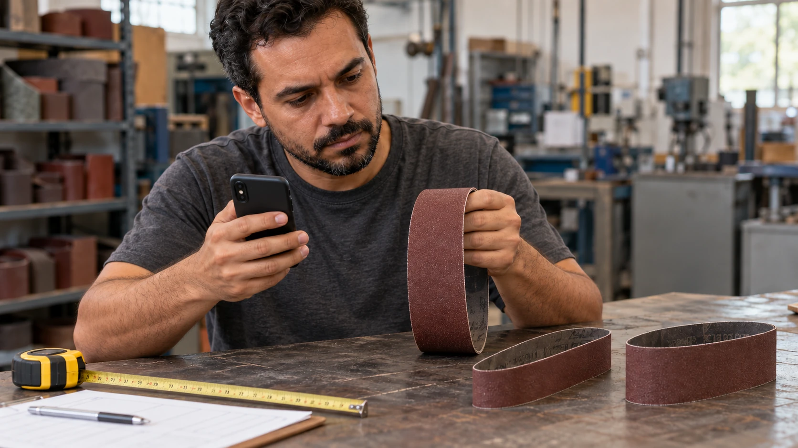

Para encomendar uma cinta sob medida, o primeiro passo é reunir as dimensões e explicar como ela será utilizada. Duas cintas com o mesmo tamanho podem precisar de abrasivos, costados e emendas diferentes.
Quanto mais clara for a aplicação, mais fácil será avaliar uma especificação adequada.
1. Largura e comprimento total
Informe as duas dimensões em milímetros e identifique cada uma.
Por exemplo: “50 mm de largura e 2.000 mm de comprimento total”.
O comprimento é a volta completa da cinta. Evite enviar somente a medida dela dobrada ou o diâmetro de uma roda da lixadeira.
2. Máquina utilizada
Envie a marca e o modelo da lixadeira, quando disponíveis. Se o equipamento for de fabricação própria, fotos e informações sobre seu funcionamento ajudam na avaliação.
Informe também se a cinta trabalha apoiada em uma mesa, em uma roda de contato ou em um trecho livre.
3. Material que será trabalhado
Explique se a aplicação envolve madeira, aço carbono, inox, alumínio ou outro material.
Quando possível, detalhe a condição da peça. Por exemplo: madeira maciça, chapa com rebarba ou lâmina de aço já tratada termicamente.
4. Operação e acabamento desejados
Diga se o objetivo é fazer desbaste, remover marcas, preparar para pintura, afiar ou refinar o acabamento.
Se a cinta atual apresenta algum problema, descreva o que acontece: perde o corte rapidamente, acumula resíduos, deixa riscos difíceis de remover ou apresenta falhas na emenda.
Essas informações ajudam a avaliar o processo, sem atribuir automaticamente a causa ao abrasivo.
5. Granulação e referência do material
Se já utiliza uma especificação aprovada, envie o grão, o código do material e uma foto das marcações no verso.
Caso não saiba qual escolher, informe a aplicação e o resultado desejado para avaliar as opções disponíveis.
6. Quantidade e condições de uso
Informe quantas cintas deseja em cada granulação e se o trabalho é realizado a seco ou com refrigeração.
O uso com água exige compatibilidade da cinta completa e do equipamento. O tipo de costado, sozinho, não confirma essa indicação.
Exemplo de solicitação
“Olá! Preciso de 10 cintas com 50 mm de largura e 2.000 mm de comprimento total: 5 em P80 e 5 em P120. Uso em uma lixadeira de bancada para preparar peças de aço carbono. O trabalho é a seco. Vou enviar fotos da máquina e da cinta atual para conferência.”
Fale com a Robusta
A Robusta trabalha com cintas sob medida. Envie essas informações pelo WhatsApp para consultar materiais disponíveis, viabilidade de fabricação, preço e prazo.
Conversar pelo WhatsApp